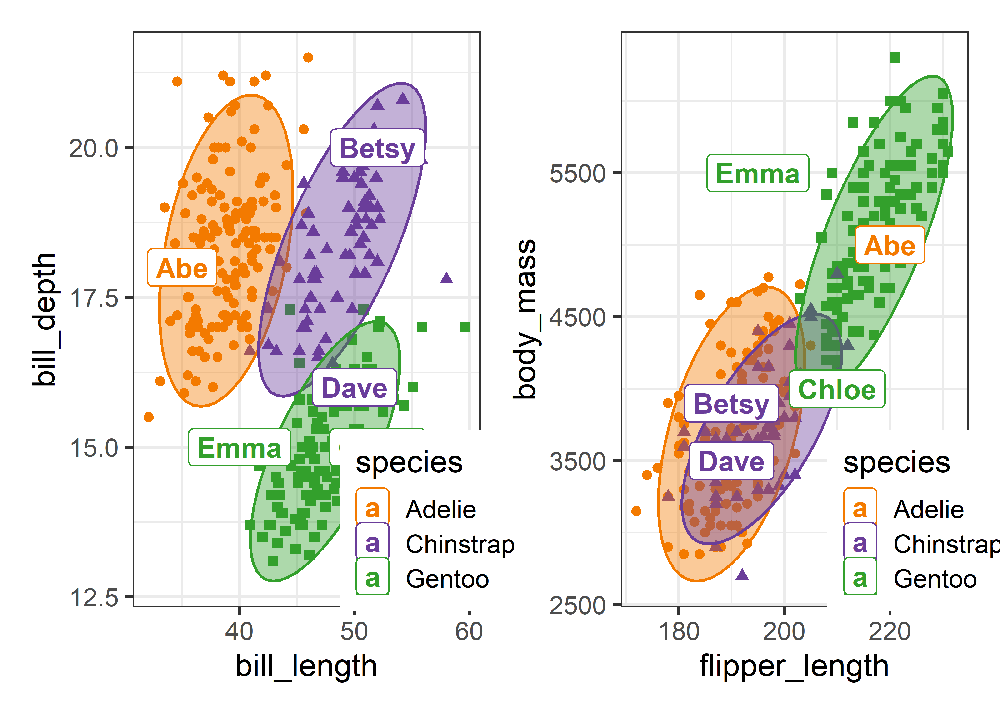

manova.mod <- lm(cbind(y1, y2, y3) ~ group)
discrim.mod <- MASS::lda(group ~ y1 + y2 + y3)Try discrim section
Discriminant analysis
As described earlier (?@sec-t2-discrim), Linear Discriminant Analysis (LDA) is similar to a one-way MANOVA, but with its emphasis on the problem of classifying observations into groups rather than testing whether there are significant differences of the means for the response variables. You would use LDA rather than MANOVA when your goal is to predict group membership and identify which variables best distinguish between pre-defined groups, rather than just testing for group differences.
Thus, LDA can be seen as a flipped MANOVA, where the role of dependent and independent variables are reversed. You can see this difference in the model formulas used in lm() compared with MASS::lda(), which fits a linear discriminant analysis (LDA) model: The outcomes on the right-hand side are cbind(y1, y2, y3) for the MANOVA but is simply group for a discriminant analysis.
One consequence of this flipped emphasis is that predicted values from predict() for an LDA is the predicted group membership for an observation with values \(y_1, y_2, y_3\) rather than the predicted response values \(\hat{y}_1, \hat{y}_2, \hat{y}_3\) in MANOVA. This is useful for classifying new observations from an LDA model, such as determining whether new Swiss banknotes are real or fake (?@exm-banknote) or classifying a new penguin.
As we have seen, the multivariate linear model fit by lm() applies equally well when there are two or more grouping factors and or quantitative predictors, whereas discriminant analysis is mostly restricted to the case of a single group factor.1
In both cases, the analysis and significance tests are based on the familiar breakdown (?@eq-SSP) of total variability, \(\mathbf{T} \equiv \mathbf{SSP}_{T}\), of the observations around the grand means into portions attributable to differences between the group means \(\mathbf{H} \equiv \mathbf{SSP}_{H}\) and the portions attributable to differences within the groups around their means, \(\mathbf{E} \equiv \mathbf{SSP}_{E}\) as described in ?@sec-sum-of-squares,
\[ \mathbf{T} = \mathbf{H} + \mathbf{E} \; . \] As we saw earlier (?@sec-H-vs-E), significance tests are based on the \(s = \min{(p, \text{df}_h)}\) non-zero eigenvalues \(\lambda_i\) of \(\mathbf{H}\mathbf{E}^{-1}\) which are combined into a single test statistic such as Wilks’ \(\Lambda = \Pi_i^s (1+\lambda_i)^{-1}\) or Hotelling-Lawley trace, \(\Sigma_i^s \lambda_i\).
The corresponding eigenvectors, \(\mathbf{V}\) of \(\mathbf{H}\mathbf{E}^{-1}\) are the weights for the linear combinations of the quantitative variables on which the groups are most widely separated. The transformation of the \(\mathbf{Y}\) variables in data space to the space of these linear combinations is given by \(\mathbf{Z}_{n \times s} = \mathbf{Y} \; \mathbf{E}^{-1/2} \; \mathbf{V}\) as we saw earlier (sec REF?).
But here is where MANOVA and discriminant analysis diverge again. In discriminant analysis, you an replace the observed \(\mathbf{Y}\) variables with the uncorrelated \(s\) discriminant variates defined by \(\mathbf{V}\) and obtain exactly the same classifications of the observations. The first, \(\mathbf{v}_1\), associated with the largest eigenvalue \(\lambda_1\), accounts for the greatest proportion of between-group separation; the second, \(\mathbf{v}_2\) is next in discriminating power, and so forth. But maybe we can classify nearly as well with a small subset of \(k < s\) discriminants without great loss. Hence, just as in PCA, discriminant analysis can be thought of as a dimension reduction technique, squeezing the most discrininant juice out of the data in a few dimensions.
The discussion here is limited to what this altered focus adds to visualizing differences among groups on a collection of response variables. See (Kleka1980?), Lachenbruch (1975) for a basic, but more general introduction to discriminant analysis methods. There is a useful discussion in this Cross Validated question How is MANOVA related to LDA?
As in MANOVA, linear discriminant analysis assumes equal variance covariance matrices across the groups. In this case, the boundaries separating predicted group memberships are hyper-planes in the data space of the quantitative variables. In 2D plots, these appear as lines, and a goal of this section is to show how you can plot these. When the variance covariance matrices differ substantially, the boundaries become curved, and the method is called quadratic discriminant analysis, implemented in MASS::qda().2
Another way that LDA differs from MANOVA is that for classification purposes, the relative proportions of the groups in your sample or in the population has a role in determining the classification rules. These are called prior probabilities, which adjust the boundaries used to classify new observations. A higher prior probability for a group increases its assigned likelihood, effectively “pulling” the classification boundary in its favor.
Example 1 Penguins on Island Z
For an example, to illustrate how discriminant analysis works, and how to use it to classify observations, imagine you are a researcher on an expedition to Antarctica to survey the penguin population. You stop at a small, as yet unnamed island “Z”, and find five penguins you want to study. You call them Abe, Betsy, Chloe, Dave and Emma. How can you determine their species based on what you know of the penguins studied before?
peng_new <- data.frame(
species = rep(NA, 5),
island = rep("Z", 5),
bill_length = c(35, 52, 52, 50, 40),
bill_depth= c(18, 20, 15, 16, 15),
flipper_length = c(220, 190, 210, 190, 195),
body_mass = c(5000, 3900, 4000, 3500, 5500),
sex = c("m", "f", "f", "m", "f"),
row.names = c("Abe", "Betsy", "Chloe", "Dave", "Emma")
)
peng_new
# species island bill_length bill_depth flipper_length
# Abe NA Z 35 18 220
# Betsy NA Z 52 20 190
# Chloe NA Z 52 15 210
# Dave NA Z 50 16 190
# Emma NA Z 40 15 195
# body_mass sex
# Abe 5000 m
# Betsy 3900 f
# Chloe 4000 f
# Dave 3500 m
# Emma 5500 fSo, you can run a discriminant analysis using the existing data and then use that to classify the new penguins on island Z. By default, MASS::lda() uses the proportions of the three species as the prior probabilities, which are given in the printed output. With \(g = 3\) groups, and \(p = 4\) variables, there are only \(s = 2\) discriminant dimensions, of which the first, LD1 accounts for 86.6% of the total …
data(peng, package = "heplots")
peng.lda <- lda(species ~ bill_length + bill_depth + flipper_length + body_mass,
data = peng)
print(peng.lda, digits = 3)
# Call:
# lda(species ~ bill_length + bill_depth + flipper_length + body_mass,
# data = peng)
#
# Prior probabilities of groups:
# Adelie Chinstrap Gentoo
# 0.438 0.204 0.357
#
# Group means:
# bill_length bill_depth flipper_length body_mass
# Adelie 38.8 18.3 190 3706
# Chinstrap 48.8 18.4 196 3733
# Gentoo 47.6 15.0 217 5092
#
# Coefficients of linear discriminants:
# LD1 LD2
# bill_length -0.08593 -0.41660
# bill_depth 1.04165 -0.01042
# flipper_length -0.08455 0.01425
# body_mass -0.00135 0.00169
#
# Proportion of trace:
# LD1 LD2
# 0.866 0.135The output from this, peng.lda, can be used to classify our new penguins using the MASS::predict.lda() method for an "lda" object. The printed result isn’t pretty, because the function simply returns a list, with elements:
class: The predicted class for each observationposterior: The posterior probabilities for the observations being assigned to eachclass. The predicted class is that of the maximum probability.x: The scores of the test cases on the discriminant variables.
peng_pred <- predict(peng.lda, newdata = peng_new) |>
print(digits = 4)
# $class
# [1] Adelie Chinstrap Gentoo Chinstrap Gentoo
# Levels: Adelie Chinstrap Gentoo
#
# $posterior
# Adelie Chinstrap Gentoo
# Abe 9.693e-01 6.150e-10 3.069e-02
# Betsy 2.205e-05 1.000e+00 3.244e-20
# Chloe 2.263e-11 1.277e-03 9.987e-01
# Dave 5.484e-07 1.000e+00 2.766e-09
# Emma 1.518e-07 8.504e-13 1.000e+00
#
# $x
# LD1 LD2
# Abe -1.0351 5.345
# Betsy 3.6062 -4.039
# Chloe -3.4278 -3.534
# Dave 0.1504 -3.839
# Emma -3.1495 3.780A little manipulation of the result from predict() makes what has happened here clear.
class <- peng_pred$class
posterior <- peng_pred$posterior
maxp <- apply(posterior, 1, max)
data.frame(class, round(posterior, 4), maxp)
# class Adelie Chinstrap Gentoo maxp
# Abe Adelie 0.969 0.0000 0.0307 0.969
# Betsy Chinstrap 0.000 1.0000 0.0000 1.000
# Chloe Gentoo 0.000 0.0013 0.9987 0.999
# Dave Chinstrap 0.000 1.0000 0.0000 1.000
# Emma Gentoo 0.000 0.0000 1.0000 1.000This says that Abe has the highest probability in the Adelie class, Betty and Dave are almost certainly of the Chinstrap species, while Chloe and Emma are almost certainly Gentoos.
Visualizing classification in data space
A simple way to understand what happens in discriminant analysis is to plot the original data in data space and add labeled points for the new observations. To make this easier, I created a function predict_discrim(), which joins the measures in the test dataset with the predicted class for each new observation.
source("R/predict_discrim.R")
pred <- predict_discrim(peng.lda, newdata = peng_new[, 3:6]) |>
print()
# bill_length bill_depth flipper_length body_mass species
# Abe 35 18 220 5000 Adelie
# Betsy 52 20 190 3900 Chinstrap
# Chloe 52 15 210 4000 Gentoo
# Dave 50 16 190 3500 Chinstrap
# Emma 40 15 195 5500 Gentoo
# maxp
# Abe 0.969
# Betsy 1.000
# Chloe 0.999
# Dave 1.000
# Emma 1.000Using this you can simply plot the original Penguin data for two variables and use geom_label() to plot the observations of the new penguins in this space. In ?@fig-peng-new-data, I do this in two separate plots, one for the bill variables, and another for flipper_length vs. body_mass. The key thing is that the call to geom_label() uses the predicted species and coordinates for the new penguins from the pred dataset.
#' label: fig-peng-new-data
#' fig-height: 5
#' fig-width: 10
#' out-width: "100%"
#' fig-cap:
p1 <- ggplot(peng,
aes(x = bill_length, y = bill_depth,
color = species, shape = species, fill=species)) +
geom_point(size=2) +
stat_ellipse(geom = "polygon", level = 0.95, alpha = 0.4) +
geom_label(data = pred, label=row.names(pred),
fill="white", size = 5, fontface="bold") +
theme_penguins +
legend_inside(c(0.87, 0.15))
p2 <- ggplot(peng,
aes(x = flipper_length, y = body_mass,
color = species, shape = species, fill=species)) +
geom_point(size=2) +
stat_ellipse(geom = "polygon", level = 0.95, alpha = 0.4) +
geom_label(data = pred, label=row.names(pred),
fill="white", size = 5, fontface="bold") +
theme_penguins +
legend_inside(c(0.87, 0.15))
p1 + p2
Visualizing classification in discriminant space
Visualizing prediction regions
References
Lachenbruch, P. (1975). Hafner.
Footnotes
The function
candisc::candisc()carries out a generalized discriminant analysis, for one term in a multivariate linear model.candisc::candiscList()does this for all terms in a model.↩︎There are a number of other methods of discriminant analysis. For example, mixture discriminant analysis (MDA): Each class is assumed to be a Gaussian mixture of subclasses …↩︎